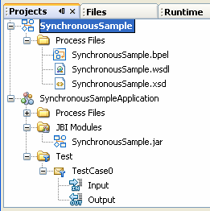
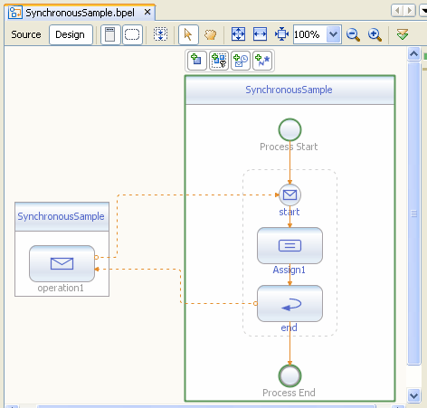

Ejercicios sesión 3: Creación de un servicio BPEL síncrono
Vamos a crear desarrollar, desplegar y probar un sencillo servicio Bpel utilizando Netbeans. Para ello seguiremos los pasos que hemos indicado en esta sesión. En este caso, se trata de un proceso BPEL síncrono que simplemente recibe un mensaje de entrada y, en función de su contenido, devuelve una respuesta u otra al cliente.
El cliente, después de invocar al proceso BPEL, permanece bloqueado hasta que el proceso termine y devuelva el resultado.
Configurar e iniciar el servidor de aplicaciones de Sun
Antes de desplegar la aplicación, debemos poner en marcha el servidor de aplicaciones
|
Pasos a seguir
|
Creamos el proyecto BPEL
La mejor forma de familiarizarnos con la construcción de diagramas BPEL el crear un proyecto ejemplo (sample project). Netbeans permite generar dos tipos de proyectos ejemplo: síncrono y asíncrono. El IDE genera un proyecto esqueleto, con los ficheros wsdl y xsd que podremos modificar a nuestra conveniencia.
|  |
Para crear un nuevo proyecto ejemplo BPEL:
Cuando creamos un proyecto BPEL ejemplo, automáticamente se genera el proyecto de aplicaciones compuestas, y automáticamente se añade el proyecto del módulo BPEL como un módulo JBI en el proyecto Composite Application. |
WSDL y esquema de nombres del proyecto BPEL
En este caso, al utilizar una plantilla para el proceso BPEL síncrono, Netbeans ha creado por nostros el fichero WSDL y el esquema de nombres.
Los ficheros WSDL pueden visualizarse de tres formas: podemos ver el código fuente (Source view), podemos verlo en forma de árbol de componentes(Design view), o podemos verlo de forma gráfica (Partner view).
La siguiente figura muestra la vista gráfica del fichero WSDL creado:

Podemos ver que el fichero WSDL contiene una definición de partnerLinkType, que es el correspondiente al cliente que realizará la llamada a nuestro servicio BPEL síncrono. También hay definidos dos mensajes: uno de entrada (requestMessage), y otro de salida (responseMessage), que contienen una cadena de caracteres
El fichero de definición de esquema es opcional en un proyecto BPEL. En este caso Netbeans también lo ha generado por nostros. Al igual que ocurre con los ficheros WSDL, los ficheros de esquema tienen tres vistas diferentes: código fuente (Source view), árbol de componentes(Schema view), y vista gráfica (Desgign view). En la siguiene figura se muestra la vista gráfica del fichero xsd creado:

Podemos ver que se ha definido el tipo typeA, que es un elemento del tipo complejo simpleProcess, que a su vez es una cadena de caracteres
En caso de que tuviésemos que crear nosotros los ficheros WSDL y de esquema, el proceso que se sigue es similar en ambos casos:
- Crear un nuevo documento: pinchamos con el botón derecho del ratón sobre el nodo Process Files y elegimos New->WSDL Document, o New->File/Folder/XML Schema.
- Desde la vista gráfica añadimos componentes arrastránolos desde la ventana Palette a la vista grafica.
- Desde la vista de árbol, añadimos componentes y pinchamos con el botón derecho sobre nodo del tipo de componente que queremos añadir, y elegimos el opción Add ... correspondiente del menú emergente
- Desde la vista de fuente, escribimos el código en el editor de texto
Lógica del proceso BPEL
Netbeans ha creado un proceso BPEL síncrono muy sencillo, que podremos modificar según nos interese. En el caso de que tuviésemos que crearlo nosotros, tendríamos que hacerlo pinchando con el botón derecho del ratón sobre el nodo Process Files y elegimos New->BPEL Process en el menú emergente.
El proceso BPEL presenta dos vistas: código fuente (Source) y vista gráfica (Design). La vista de diseño (o vista gráfica) que se ha generado de forma automática es la siguiente:

En el caso de que tuviésemos que crear nosotros el proceso BPEL desde cero, tendríamos que ir añadiendo elementos arrastrándolos desde la ventana Palette hasta la vista de diseño del proceso BPEL.
 |
La paleta de componentes nos muestra los elementos que podemos insertar en el proceso BPEL, clasificados en tres categorías:
|
A su vez, podemos acceder a las propiedades del módulo BPEL, pulsando con el botón derecho sobre el nodo del módulo (en la ventana Projects), y seleccionando Properties del menú emergente. En este caso, nos aparecerá un cuadro en el que podemos acceder a varias páginas:
- General: muestra la ruta de directorios de los ficheros del proyecto, entre otros elementos
- Referencias del proyecto: muestra otros proyectos BPEL referenciados por nuestro proyecto BPEL
- Catálogo XML: muestra las entradas del catálogo XML usado en el proyecto BPEL. Los catálogos XML proporcionan información de mapeo entre una entidad externa en un documento XML y su localización real del documento que está siendo referenciado.
Volviendo a nuestro proceso BPEL síncrono, a continuación mostramos el código fuente generado por Netbeans:
<?xml version="1.0" encoding="UTF-8"?>
<process
name="SynchronousSample"
targetNamespace="http://enterprise.netbeans.org/bpel/SynchronousSample/SynchronousSample_1"
xmlns="http://docs.oasis-open.org/wsbpel/2.0/process/executable"
xmlns:xsd="http://www.w3.org/2001/XMLSchema"
xmlns:bpws="http://docs.oasis-open.org/wsbpel/2.0/process/executable"
xmlns:wsdlNS="http://enterprise.netbeans.org/bpel/SynchronousSample/SynchronousSample_1"
xmlns:ns1="http://localhost/SynchronousSample/SynchronousSample">
<import location="SynchronousSample.xsd" importType="http://www.w3.org/2001/XMLSchema"
namespace="http://xml.netbeans.org/schema/SynchronousSample"/>
<import namespace="http://localhost/SynchronousSample/SynchronousSample"
location="SynchronousSample.wsdl" importType="http://schemas.xmlsoap.org/wsdl/"/>
<partnerLinks>
<partnerLink name="SynchronousSample" partnerLinkType="ns1:partnerlinktype1"
myRole="partnerlinktyperole1"/>
</partnerLinks>
<variables>
<variable name="outputVar" messageType="ns1:responseMessage"/>
<variable name="inputVar" messageType="ns1:requestMessage"/>
</variables>
<sequence>
<receive name="start" partnerLink="SynchronousSample" operation="operation1"
portType="ns1:portType1" variable="inputVar" createInstance="yes"/>
<assign name="Assign1">
<copy>
<from>$inputVar.inputType/paramA</from><to>$outputVar.resultType/paramA</to>
</copy>
</assign>
<reply name="end" partnerLink="SynchronousSample" operation="operation1"
portType="ns1:portType1" variable="outputVar"/>
</sequence>
</process>
Según el código fuente anterior, podemos ver que la lógica del proceso de negocio consiste en esperar a recibir una llamada del partner link cliente sobre la operación operation1, con el mensaje de entrada inputVar. Una vez que el proceso BPEL ha sido invocado por un cliente, asignamos el valor del mensaje de entrada en el mensaje de salida, denominado outputVar y se lo enviamos al cliente utilizando la actividad reply
Añadimos una actividad if
Vamos a modificar este proceso inicial añadiendo una actividad if en la vista de diseño. Para ello:
- Elegimos el icono if de la paleta de componentes y lo arrastramos a la vista de diseño del proceso BPEL, situándolo entre las actividades Start y Assign. Esto nos siuará una actividad if denominada if1 en la vista de diseño. (El IDE nos indica dónde podemos situar los elementos que arrastramos mediante dos círculos concéntricos, coloreando el más pequeño).
- Pinchamos sobre la actividad if1 y aparecerá la ventana de mapeado (BPEL Mapper) en la parte inferior del IDE (si esta ventana no es visible, podemos visualizarla mediante Window->BPEL Mapper). Usaremos la ventana de mapeado para definir una condición booleana.
- En la barra de menús, pinchamos en Operator y seleccionamos el método EQUAL en el menú emergente. El método equal aparecerá en la parte central de la ventana de mapeado.
- En la barra de menús, pinchamos sobre el método String y seleccionamos String Literal en la lista desplegable. Aparecerá una caja con la etiqueta String literal en el panel central.
- Tecleamos "Hola mundo" en el método string literal y pulsamos retorno de carro.
- En el panel de la izquierda, expandimos el nodo Variables - inputVar - inputType, aparecerá paramA
- Arrastramos paramA sobre la parte any1 del método equal
- Seleccionamos el pequeño cuadrado que aparece en el lado derecho de la caja String Literal. Cuando el cursor con forma de mano aparezca, dibujamos una línea que conecte dicha caja con la aprte any2 del método equal
- Desde el método equal, arrastrar return boolean sobre Result en el panel de la derecha
El resultado de realizar las acciones anteriores debe ser el que mostramos a continuación:
Añadimos una actividad Assign
En la vista de diseño, arrastramos la actividad Assign1 existente hasta la actividad if. Colocamos esta actividad entre los iconos X en el área de la actividad if1
A continuación, elegimos la actividad Assign de la sección de actividades básicas de la paleta, y la arrastramos a la derecha de la actividad Assign1 existente.

Seleccionamos la nueva actividad Assign2 y volvemos a utilizar la ventana de mapeado de la siguiente forma.
- Elegimos el método String en la barra de menús y seleccionamos Concat de la lista desplegable. Aparecerá el método Concat en el panel central.
- Pinchamos con el botón derecho en el primer campo en la caja concat y elegimos Add Literal del menú emergente
- Tecleamos Hola seguido de un espacio y pulsamos el retorno de carro
- Expandimos el nodo inputVar - inputType (en el panel de la izquierda) y arrastramos paramA sobre la parte string2 del método concat
- Expandimos el nodo outputVar - resultType (en el panel de la derecha)
- Arrastramos el return string desde el método concat hasta paramA (en el panel de la derecha). Esto concatena la cadena "Hello " con la entrada y copia el resultado en la salida.
Después de realizar los pasos anteriores, la ventana de mapeado debe presentar el siguiente aspecto:
Desplegamos el proyecto en el servidor de aplicaciones
Desplegar el proyecto significa hacer que el ensamblado de servicios esté disponible para el servidor de aplicaciones, permitiendo así que las unidades de servicio puedan ejecutarse.
Para desplegar la Composite Application realizaremos los siguientes pasos:
- Si la ventana Output no es visible, elegimos Window->Output
- Pinchamos con el botón derecho sobre el proyecto SynchronousSampleApplication y elegimos Deploy Project.
- En el diálogo Warning nos aseguraremos de que está seleccionado Sun Java Application Server 9 y pinchamos sobre OK. Aparecerá el mensaje BUILD SUCCESSFUL en la ventana Output
Creamos un conductor de pruebas
Vamos a añadir casos de prueba para comprobar el funcionamiento del proceso BPEL que hemos creado. Para ello seguiremos los siguientes pasos:
- En la ventana Projects, expandimos el nodo del proyecto SynchronousSampleApplication, pinchamos con el botón derecho sobre el nodo Test, y elegimos New Test Case del menú emergente.
- Vamos a darle el nombre CasoPrueba1 y pinchamos en Next.
- Expandimos SynchronousSample - Process Files y seleccionamos SynchronousSample.wsdl. Pinchamos en Next
- Seleccionamos operation1 y pinchamos en Finish. Ahora, en en árbol del proyecto, bajo el nodo Test se ha creado la carpeta CasoPrueba1, que contiene dos ficheros: Input y Output
- Pinchamos dos veces sobre Input y modificamos su contenido de la siguiente forma:
- Localiza la siguiente línea en los contenidos del cuerpo: <syn:paramA>?string?<syn:paramA>
- Reemplaza ?string? con Colega
- Grabamos los cambios desde File->Save
- Pinchamos dos veces sobre Output.xml para examinar los contenidos. Antes de ejecutar las pruebas, este fichero está vacío. Cada vez que ejecutemos las pruebas, la salida actual se compara con los contenidos de Output. La entrada (input) se copia sobre Output cuando Output está vacío.
Ejecutamos las pruebas sobre SynchronousSampleApplication
En la ventana Projects, expandimos SynchronousSampleApplication - Test - TestCase0. El nodo TestCase0 contiene dos ficheros XML: Input para la entrada, y Output para la salida esperada. Cada vez que se ejecuta el caso de prueba, la salida actual se compara con el contenido de Output. Si coinciden, entonces superamos la prueba y veremos en la ventana Output el mensaje: Nombre_Caso_Prueba passed. Si no coinciden, aparecerá el mensaje Nombre_Caso_Prueba FAILED.
Pinchamos con el botón derecho sobre el nodo TestCase0, y elegimos Run en el menú emergente. Nos fijamos en la ventana Output y veremos que el test se ha completado y que no pasamos el test, ya que aparece el mensaje CasoPrueba1 FAILED. Pregunta: ¿Puedes explicar por qué ocurre ésto? Realiza las modificaciones necesarias para poder superar el test.
A continuación, repetimos las acciones indicadas en el párrafo anterior sobre CasoPrueba1. En este caso, como el fichero Output está vacío, se nos pregunta si queremos sobreescribirlo. Contestamos que sí. En la ventana Output aparecerá el mensaje: CasoPrueba1 FAILED. Después de la primera ejecución, el fichero Output.xml ya no está vacío, por lo que su contenido será preservado y no será sobreescrito por el nuevo resultado. Si ejecutamos de nuevo el test, podremos ver el mensaje: CasoPrueba1 passed.